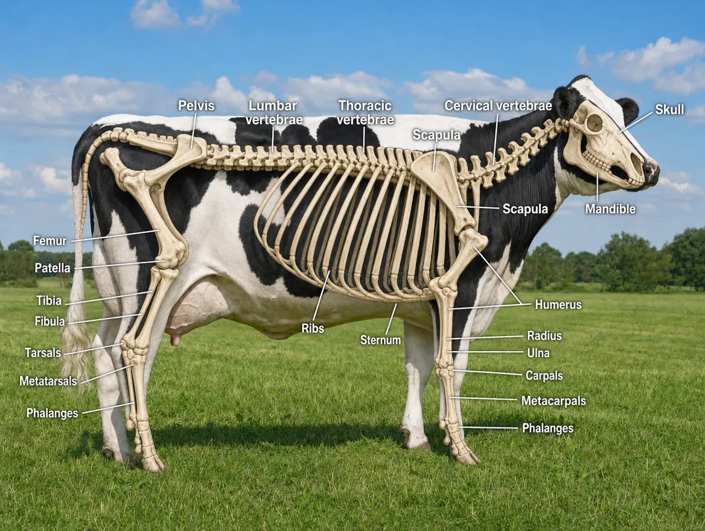
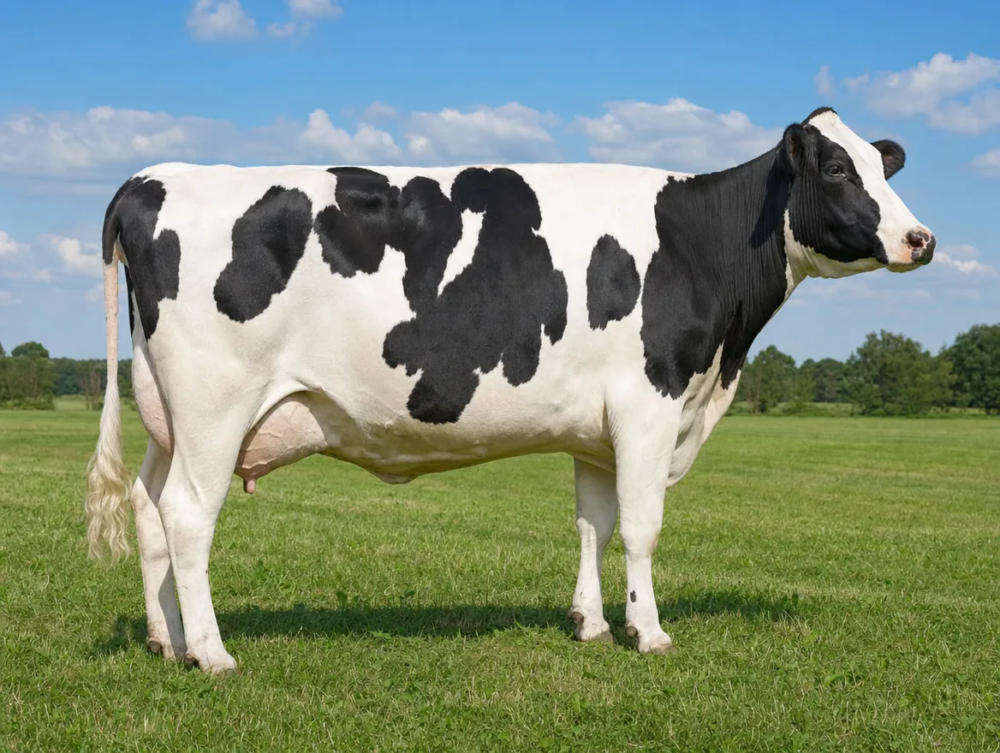

/skeletonview
OriginalDrag the handle in either image. These are two of the codes — /skeletonview and /ghosted — each applied to an ordinary photo (/ghosted needed one added sentence, shown on its card below). The full library of 50, and the instructions for making your own, follow below.
50 visual codes for ChatGPT
Upload one photo, type one word, and ChatGPT turns it into a teaching visual — a cutaway, an anatomy diagram, a blueprint. The codes are not official ChatGPT commands, just one-word prompts the image model understands remarkably well. Drag the slider on any card to see exactly what each code does to the same photo.
What is a visual code for ChatGPT?
A visual code is a one-word, slash-prefixed prompt — like /cutaway or /anatomy — that you send to ChatGPT together with an uploaded photo. The image model reads the word as an instruction and returns a transformed version of the same picture: a cutaway view, an X-ray, a labelled anatomy diagram, a technical blueprint. This page collects 50 codes with clear classroom value, sorted into eight categories, each demonstrated with a draggable before/after slider on the same photo.
Make your own in 30 seconds
Upload a photo
Any photo works: an object, an animal, a place, a screenshot — or a picture you have generated.
Type one code
Send just the codeword and nothing else — for example /cutaway. That single word is the whole prompt.
Ask for labels
Want text in the image? Add “with clear labels in English” — or in any language your class works in.
Keep it comparable
Add “keep the same subject, pose, scale and framing”. Without it the model quietly zooms or re-crops, and the two images no longer line up.
Most codes work on their own. A few cannot: “compare two versions” and “show the change” are impossible to follow unless the model knows compare with what or change into what. Those cards carry an Add line with the exact words to append.
Use the same trick whenever a result disappoints. One word is usually enough, but if the word leaves too much room for interpretation the model will pick the shallowest reading — often just labelling the surface instead of transforming the picture. When that happens, add the context you had in mind: not /anatomy but “/anatomy — show the internal organs beneath the skin”. You are not breaking the method; you are telling it which of several possible answers you were after.
Level up: combine codes
The codes are plain prompts, so they stack. Try sending two or more in the same message: /cutaway /annotatedphoto gives you an opened-up view with labels, /anatomy /educationalposter turns an animal photo into a labelled classroom poster. Two or three compatible codes usually beats one — experiment.